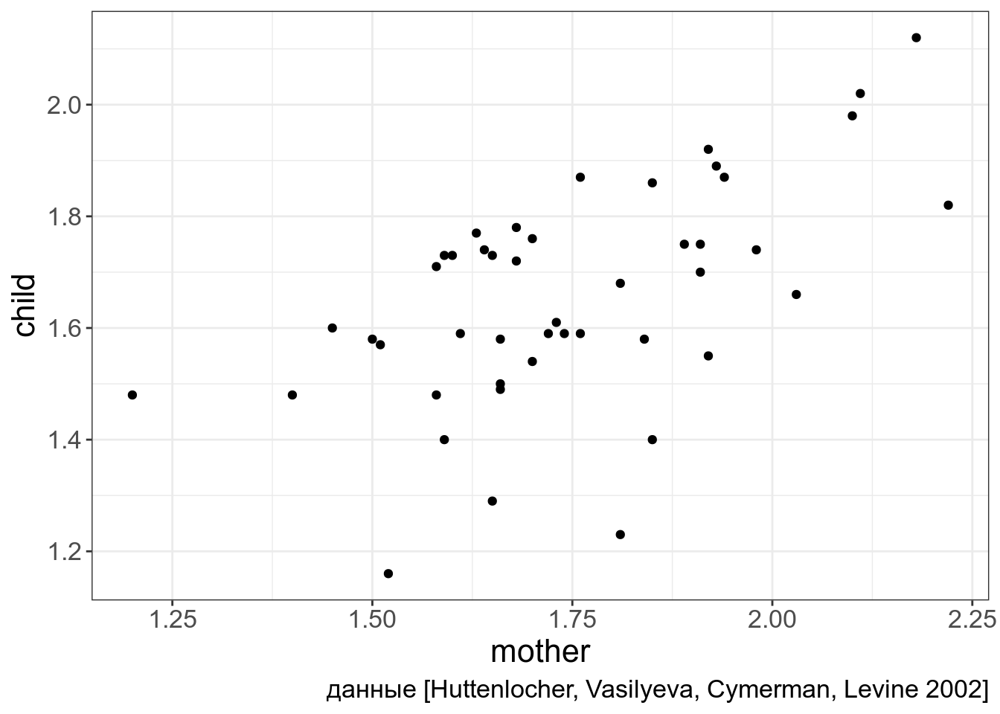
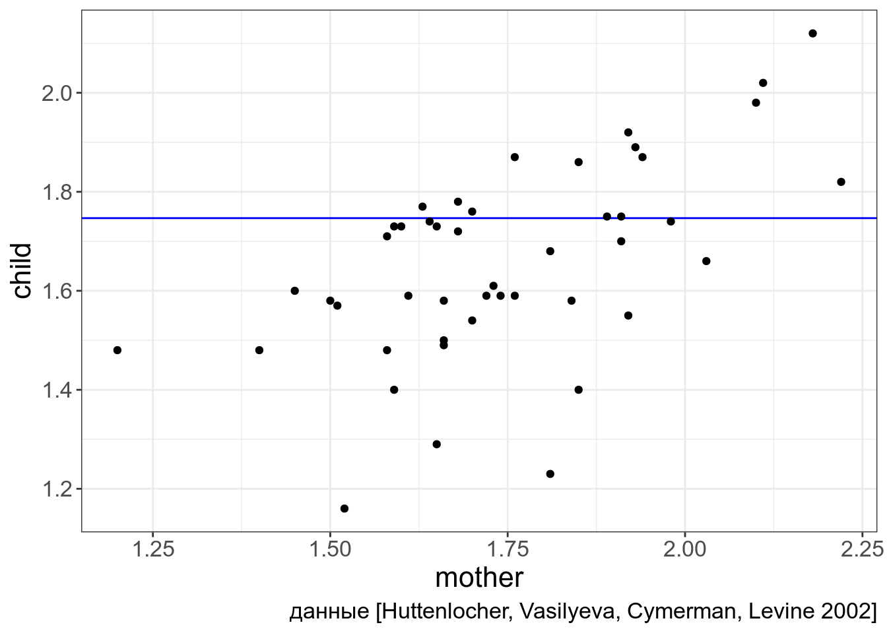
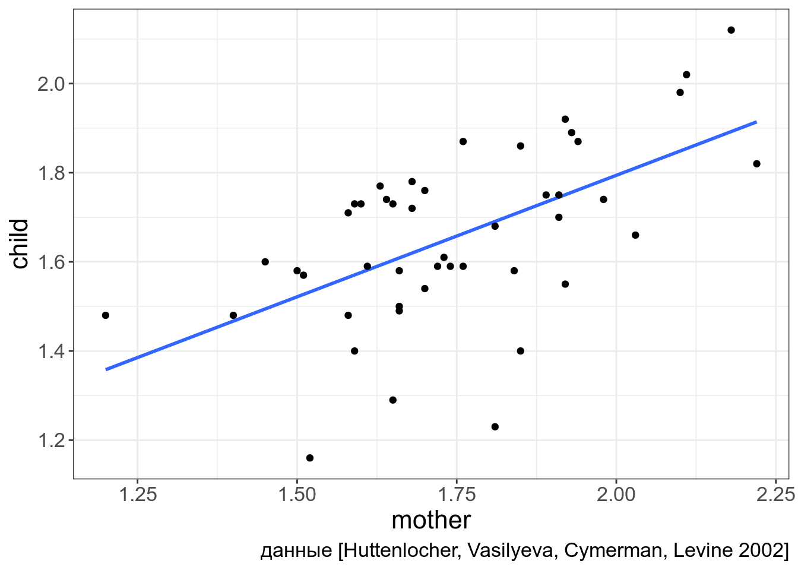
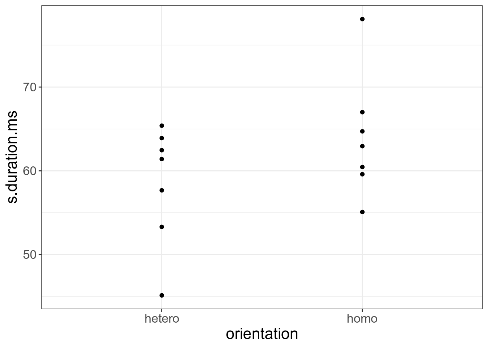
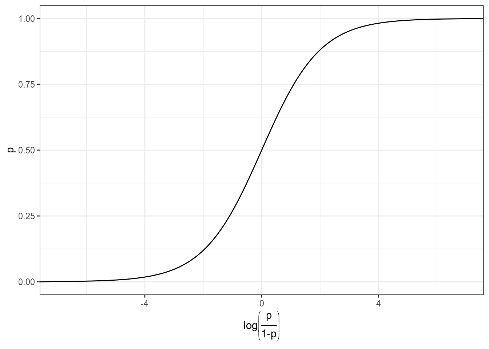
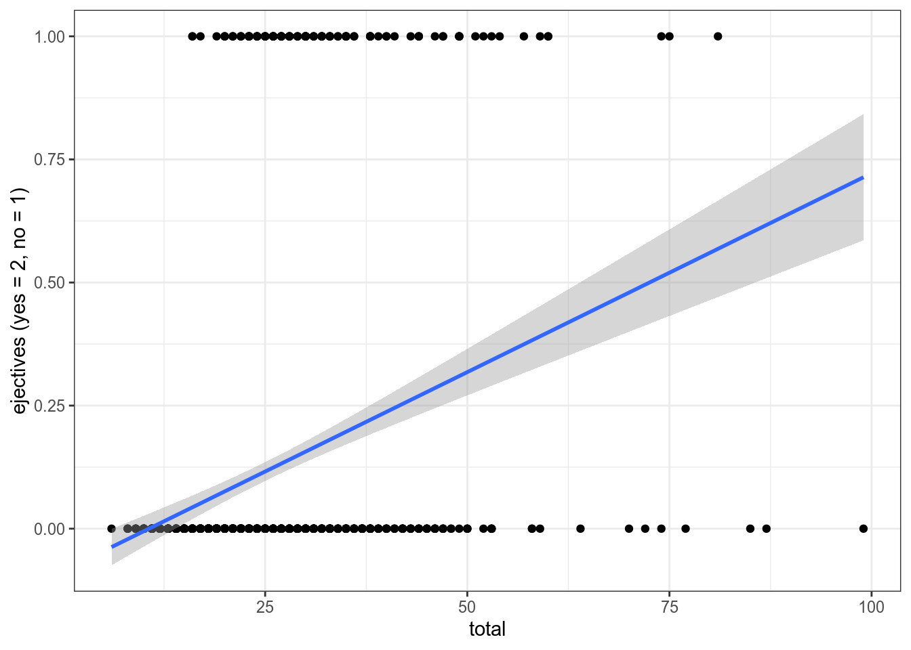
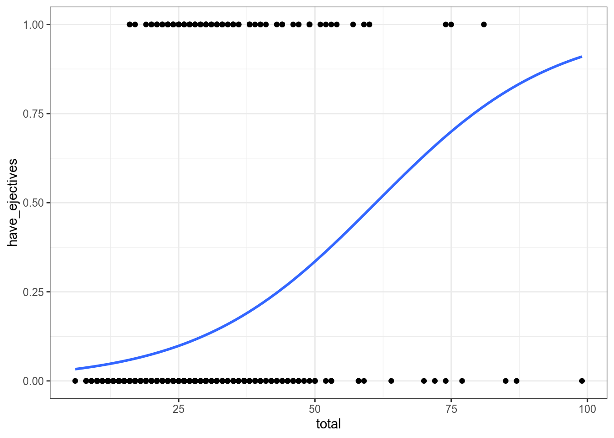

Для тех, кто хочет следить за кодом, вот загруженные библиотеки:
library(tidyverse)
# это стиль для ggplot (можно игнорировать эту команду)
theme_set(theme_bw()+
theme(text = element_text(size = 16))) В качестве примера я использую данные из работы [Huttenlocher, Vasilyeva, Cymerman, Levine 2002], в которой авторы проанализировали 46 пар матерей и детей (возрастом от 47 до 59 месяцев, средний возраст … а пасчитайте сами!). Они записали и затранскрибировали 2 часа каждого дня ребенка. Потом они посчитали количество именных групп на предложение у матерей и ребенка. Данные можно скачать командой: np_acquisition <- read.csv("https://raw.githubusercontent.com/agricolamz/2019_PhonDan/master/data/Huttenlocher.csv")
np_acquisition <- read.csv("https://raw.githubusercontent.com/agricolamz/2019_PhonDan/master/data/Huttenlocher.csv")
np_acquisitionПредставим себе, что мы хотим научиться предсказывать количество именных групп у ребенка на основании количества именных групп у матери.
np_acquisition %>%
ggplot(aes(mother, child))+
geom_point()+
labs(caption = "данные [Huttenlocher, Vasilyeva, Cymerman, Levine 2002]")
Простейшая статистическая модель будет выглядеть следующим образом:
\[y_i = \beta_0 + e_i\]
Так как любая регрессионная модель стремиться улучшить свои предсказания, лучшим коэфециентом \(k\) будет тот, при котором \(e_i\) будут минимальны. В нашей простой модели — это понятное дело будет среднее:
np_acquisition %>%
ggplot(aes(mother, child))+
geom_hline(aes(yintercept = (mean(mother))), color = "blue")+
geom_point()+
labs(caption = "данные [Huttenlocher, Vasilyeva, Cymerman, Levine 2002]")
\[child_j = mean(child) + e_j\]
Если мы хотим включить переменную mother в нашу регрессию, то мы это можем сделать используя формулу прямой:
\[y_j = \beta_0 + \beta_1\times x_j + e_j\]
np_acquisition %>%
ggplot(aes(mother, child))+
geom_smooth(method = "lm", se = FALSE)+
geom_point()+
labs(caption = "данные [Huttenlocher, Vasilyeva, Cymerman, Levine 2002]")
Т. е. формула применительно к нашим данным выглядит следующим образом:
\[child_j = \beta_0 + \beta_1\times mother_j + e_j\]
В R это делается при помощи функции lm:
##
## Call:
## lm(formula = child ~ mother, data = np_acquisition)
##
## Coefficients:
## (Intercept) mother
## 0.7038 0.5452Теперь мы можем полностью записать формулу:
\[child_j = 0.7038 + 0.5452 \times mother_j + e_j\]
Результаты регрессии можно записать в переменную, а потом посмотреть даже статистическую значимость каждого из полученных коэффициентов:
##
## Call:
## lm(formula = child ~ mother, data = np_acquisition)
##
## Residuals:
## Min 1Q Median 3Q Max
## -0.46058 -0.08925 0.01071 0.13333 0.22770
##
## Coefficients:
## Estimate Std. Error t value Pr(>|t|)
## (Intercept) 0.7038 0.2051 3.432 0.00132 **
## mother 0.5452 0.1166 4.676 2.79e-05 ***
## ---
## Signif. codes: 0 '***' 0.001 '**' 0.01 '*' 0.05 '.' 0.1 ' ' 1
##
## Residual standard error: 0.1627 on 44 degrees of freedom
## Multiple R-squared: 0.332, Adjusted R-squared: 0.3168
## F-statistic: 21.86 on 1 and 44 DF, p-value: 2.789e-05На что смотреть:
Теперь мы можем предсказывать! Правдо не обязательно все руками вбивать в формулу, например, для значения mother = 1.69:
## 1
## 1.625153🤔 Скачайте датасет с параметрами рассказов А. П. Чехова: количество уникальных слов, длина рассказа. Постройте регрессионную модель предсказывающую количество уникальных слов на основе длины рассказа. Какой получился интерсепт (с точностью до 4 знаков после запятой)?
🤔 Какой получился коэффициент при переменной длина рассказа (с точностью до 4 знаков после запятой)?
🤔 Что полученная модель предсказывает для рассказа размером 855 слов (с точностью до 4 знаков после запятой)?
А что если одна из переменных у нас категориальная? В таком случае вводятся dummy-переменные. Рассмотрим наш вчерашний пример из [Hau 2007]:
homo <- read.csv("https://raw.githubusercontent.com/agricolamz/2019_PhonDan/master/data/Hau.2007.csv")Попробуем предсказать длительность s на основании ориентации спикера. Для этого в регрссию вводят так-называемые dummy-переменные. Dummy-переменные принимают лишь два значения либо 1, либо 0. В нашем случае 1 — гомосексуал, 0 — гетеросексуал.

В таком случае наша формула примет следующий вид:
\[y_j = \beta_0 + \beta_1\times x + e_j\]
\[s\_duration_j = \beta_0 + \beta_1\times orientation_j + e_j\]
При описании гомосексуалов переменная \(orientation = 1\), тогда модель принимает вид: \[s\_duration_j = \beta_0 + \beta_1\times orientation_j + e_j = \beta_0 + \beta_1\times 0 + e_j = \beta_0 + e_j\]
При описании гомосексуалов переменная \(orientation = 1\), тогда модель принимает вид: \[s\_duration_j = \beta_0 + \beta_1\times orientation_j + e_j = \beta_0 + \beta_1\times 1 + e_j = \beta_0 + \beta_1 + e_j\]
##
## Call:
## lm(formula = s.duration.ms ~ orientation, data = homo)
##
## Residuals:
## Min 1Q Median 3Q Max
## -13.3357 -4.1779 -0.0343 3.7500 14.1271
##
## Coefficients:
## Estimate Std. Error t value Pr(>|t|)
## (Intercept) 58.466 2.735 21.375 6.41e-11 ***
## orientationhomo 5.517 3.868 1.426 0.179
## ---
## Signif. codes: 0 '***' 0.001 '**' 0.01 '*' 0.05 '.' 0.1 ' ' 1
##
## Residual standard error: 7.237 on 12 degrees of freedom
## Multiple R-squared: 0.145, Adjusted R-squared: 0.0737
## F-statistic: 2.034 on 1 and 12 DF, p-value: 0.1793Таким образом эта модель возвращает всего два числа: гетеросексуалы — \(58.466\), гомосексуалы — \(58.466+5.517=63.983\).
ОЧЕНЬ ВАЖНО: dummy-переменных всегда (n-1). Т. е. если значений категориальной переменной 7, то dummy-переменных будет 6 и т. д.
ОЧЕНЬ ВАЖНО: сколько бы не было значений категориальных, регрессия выбирает одну категорию (reference level) и проводит сравнение ее со всеми. Т. е. категории не в интерсепте не сравниваются, однако можно поменять reference level при помощи типа переменных factor.
homo$orientation <- factor(homo$orientation, levels = c("homo", "hetero"))
fit <- lm(s.duration.ms~orientation, data = homo)
summary(fit)##
## Call:
## lm(formula = s.duration.ms ~ orientation, data = homo)
##
## Residuals:
## Min 1Q Median 3Q Max
## -13.3357 -4.1779 -0.0343 3.7500 14.1271
##
## Coefficients:
## Estimate Std. Error t value Pr(>|t|)
## (Intercept) 63.983 2.735 23.392 2.22e-11 ***
## orientationhetero -5.517 3.868 -1.426 0.179
## ---
## Signif. codes: 0 '***' 0.001 '**' 0.01 '*' 0.05 '.' 0.1 ' ' 1
##
## Residual standard error: 7.237 on 12 degrees of freedom
## Multiple R-squared: 0.145, Adjusted R-squared: 0.0737
## F-statistic: 2.034 on 1 and 12 DF, p-value: 0.1793🤔 Скачайие датасет, который содержит данные по количеству согласных в языках мира. Постройте регрессию предсказывающую количество согласных на основании наличия абруптивных. Приведите интерсепт модели (с точностью до 4 знаков после запятой):
🤔 Приведите коэффициент при переменной
have_ejectives(с точностью до 4 знаков после запятой):
В целом, вообще-то можно в предсказании использовать не одну переменную, а сразу много. Это сложнее визуализировать, но все остальное выглядит так же:
\[y_j = \beta_0 + \beta_1 \times x_{1j} + \dots + \beta_k \times x_{kj} + e_j\]
Кроме того на практике, исследователи сравнивают разные модели, выбирая модели с статистически значимыми предикторами или используя информационные критерии (самый распространенный — критерий Акаике, который реализован в функции AIC)
summary(lm(perceived.as.homo.percent~s.duration.ms+average.f0.Hz+f0.range.Hz, data = homo))<# 0.238 form name=“FormSix” onsubmit=“return validateFormSix()” method=“post”>🤔 В датасете про гомосексуалов попробуйте предсказать восприятие носителей как гомосексуалов на основании переменных длительность s, средняя частота основного тона и размер диапозона частоты основного тона. Првиедите \(R^2\) получившейся модели:
Мы хотим чего-то такого: \[\underbrace{y}_{[-\infty, +\infty]}=\underbrace{\mbox{β}_0+\mbox{β}_1\cdot x_1+\mbox{β}_2\cdot x_2 + \dots +\mbox{β}_k\cdot x_k +\mbox{ε}_i}_{[-\infty, +\infty]}\] Вероятность — (в классической статистике) отношение количества успехов к общему числу событий: \[p = \frac{\mbox{# успехов}}{\mbox{# неудач} + \mbox{# успехов}}, \mbox{область значений: }[0, 1]\] Шансы — отношение количества успехов к количеству неудач: \[odds = \frac{p}{1-p} = \frac{p\mbox{(успеха)}}{p\mbox{(неудачи)}}, \mbox{область значений: }[0, +\infty]\] Натуральный логарифм шансов: \[\log(odds), \mbox{область значений: }[-\infty, +\infty]\]
Но, что нам говорит логарифм шансов? Как нам его интерпретировать?
data_frame(n = 10,
success = 1:9,
failure = n - success,
prob.1 = success/(success+failure),
odds = success/failure,
log_odds = log(odds),
prob.2 = exp(log_odds)/(1+exp(log_odds)))## Warning: `data_frame()` is deprecated, use `tibble()`.
## This warning is displayed once per session.Как связаны вероятность и логарифм шансов: \[\log(odds) = \log\left(\frac{p}{1-p}\right)\] \[p = \frac{\exp(\log(odds))}{1+\exp(\log(odds))}\]
Как связаны вероятность и логарифм шансов:
data_frame(p = seq(0, 1, 0.001),
log_odds = log(p/(1-p))) %>%
ggplot(aes(log_odds, p))+
geom_line()+
labs(x = latex2exp::TeX("$log\\left(\\frac{p}{1-p}\\right)$"))+
theme_bw()
lm_0 <- lm(as.integer(have_ejectives)~1, data = ejectives)
lm_1 <- lm(as.integer(have_ejectives)~total, data = ejectives)
lm_0##
## Call:
## lm(formula = as.integer(have_ejectives) ~ 1, data = ejectives)
##
## Coefficients:
## (Intercept)
## 0.1129##
## Call:
## lm(formula = as.integer(have_ejectives) ~ total, data = ejectives)
##
## Coefficients:
## (Intercept) total
## -0.085876 0.008077Первая модель: \[ejectives = 1.316 \times consonants\] Вторая модель: \[ejectives = 0.4611 + 0.0353 \times consonants\]
ejectives %>%
ggplot(aes(total, as.integer(have_ejectives)))+
geom_point()+
geom_smooth(method = "lm")+
theme_bw()+
labs(y = "ejectives (yes = 2, no = 1)")
Будьте осторожны, glm не работает с тибблом.
##
## Call:
## glm(formula = have_ejectives ~ 1, family = "binomial", data = ejectives)
##
## Deviance Residuals:
## Min 1Q Median 3Q Max
## -0.4895 -0.4895 -0.4895 -0.4895 2.0886
##
## Coefficients:
## Estimate Std. Error z value Pr(>|z|)
## (Intercept) -2.0613 0.1008 -20.45 <2e-16 ***
## ---
## Signif. codes: 0 '***' 0.001 '**' 0.01 '*' 0.05 '.' 0.1 ' ' 1
##
## (Dispersion parameter for binomial family taken to be 1)
##
## Null deviance: 693.17 on 982 degrees of freedom
## Residual deviance: 693.17 on 982 degrees of freedom
## AIC: 695.17
##
## Number of Fisher Scoring iterations: 4## (Intercept)
## -2.061259##
## FALSE TRUE
## 872 111## [1] -2.061259## [1] 0.1129196## [1] 0.1129196##
## Call:
## glm(formula = have_ejectives ~ total, family = "binomial", data = ejectives)
##
## Deviance Residuals:
## Min 1Q Median 3Q Max
## -2.1944 -0.4687 -0.3933 -0.3292 2.3776
##
## Coefficients:
## Estimate Std. Error z value Pr(>|z|)
## (Intercept) -3.74452 0.26122 -14.335 < 2e-16 ***
## total 0.06119 0.00803 7.621 2.52e-14 ***
## ---
## Signif. codes: 0 '***' 0.001 '**' 0.01 '*' 0.05 '.' 0.1 ' ' 1
##
## (Dispersion parameter for binomial family taken to be 1)
##
## Null deviance: 693.17 on 982 degrees of freedom
## Residual deviance: 630.41 on 981 degrees of freedom
## AIC: 634.41
##
## Number of Fisher Scoring iterations: 5## (Intercept) total
## -3.74451734 0.06119122ejectives %>%
mutate(have_ejectives = as.integer(have_ejectives)) %>%
ggplot(aes(total, have_ejectives)) +
geom_point()+
theme_bw()+
geom_smooth(method = "glm",
method.args = list(family = "binomial"),
se = FALSE)
Какова вероятность, что в языке с 29 согласными есть абруптивные?
## (Intercept) total
## -3.74451734 0.06119122\[\log\left({\frac{p}{1-p}}\right)_i=\beta_0+\beta_1\times consinants_i + \epsilon_i\] \[\log\left({\frac{p}{1-p}}\right)=-12.1123347 + 0.4576095 \times 29 = 1.158341\] \[p = \frac{e^{1.158341}}{1+e^{1.158341}} = 0.7610311\]
## 1
## -1.969972## 1
## 0.1223919##
## Call:
## glm(formula = have_ejectives ~ area, family = "binomial", data = ejectives)
##
## Deviance Residuals:
## Min 1Q Median 3Q Max
## -1.10816 -0.46538 -0.44865 -0.00013 2.21664
##
## Coefficients:
## Estimate Std. Error z value Pr(>|z|)
## (Intercept) -2.16832 0.16904 -12.827 < 2e-16 ***
## areaAustralia -16.39775 1581.97224 -0.010 0.992
## areaEurasia -0.07711 0.30002 -0.257 0.797
## areaNorth America 2.00324 0.27560 7.269 3.63e-13 ***
## areaPapua -16.39775 555.24390 -0.030 0.976
## areaSouth America -0.19880 0.31858 -0.624 0.533
## ---
## Signif. codes: 0 '***' 0.001 '**' 0.01 '*' 0.05 '.' 0.1 ' ' 1
##
## (Dispersion parameter for binomial family taken to be 1)
##
## Null deviance: 693.17 on 982 degrees of freedom
## Residual deviance: 589.74 on 977 degrees of freedom
## AIC: 601.74
##
## Number of Fisher Scoring iterations: 17## (Intercept) areaAustralia areaEurasia areaNorth America
## -2.16832083 -16.39774768 -0.07710585 2.00324108
## areaPapua areaSouth America
## -16.39774768 -0.19880278##
## Africa Australia Eurasia North America Papua South America
## FALSE 341 17 170 46 138 160
## TRUE 39 0 18 39 0 15## [1] -1.791759## [1] 1.098612##
## Call:
## glm(formula = have_ejectives ~ total + area, family = "binomial",
## data = ejectives)
##
## Deviance Residuals:
## Min 1Q Median 3Q Max
## -2.21414 -0.42232 -0.33162 -0.00015 2.44830
##
## Coefficients:
## Estimate Std. Error z value Pr(>|z|)
## (Intercept) -4.402e+00 3.662e-01 -12.021 < 2e-16 ***
## total 7.282e-02 9.629e-03 7.562 3.96e-14 ***
## areaAustralia -1.557e+01 1.570e+03 -0.010 0.9921
## areaEurasia -4.458e-01 3.348e-01 -1.331 0.1830
## areaNorth America 2.444e+00 3.022e-01 8.088 6.05e-16 ***
## areaPapua -1.556e+01 5.383e+02 -0.029 0.9769
## areaSouth America 6.069e-01 3.483e-01 1.742 0.0814 .
## ---
## Signif. codes: 0 '***' 0.001 '**' 0.01 '*' 0.05 '.' 0.1 ' ' 1
##
## (Dispersion parameter for binomial family taken to be 1)
##
## Null deviance: 693.17 on 982 degrees of freedom
## Residual deviance: 525.76 on 976 degrees of freedom
## AIC: 539.76
##
## Number of Fisher Scoring iterations: 17## [1] 695.1651## [1] 634.4102## [1] 601.7417## [1] 539.7573Для того, чтобы интерпретировать коэффициенты нужно проделать трансформацю:
## (Intercept) total
## -97.635296 6.310218Перед нами процентное изменние шансов при увеличении независимой переменной на 1.
Было предложено много аналогов R\(^2\), например, McFadden’s R squared:
## llh llhNull G2 McFadden r2ML
## -315.20508447 -346.58253511 62.75490127 0.09053385 0.06184508
## r2CU
## 0.12223149🤔 В датасете про гомосексуалов попробуйте предсказать ориентацию носителей на основании переменных длительность s, средняя частота основного тона и размер диапозона частоты основного тона. Приведите коэффициент при предикторе
average.f0.Hzполучившейся модели (с точностью до 3 знака после запятой).
🤔 Посчитайте вероятность быть гомосексуалом с условием `s.duration.ms = 62, average.f0.Hz =120, f0.range.Hz = 60. Ответ приведите с точностью до 3 знаков после запятой.
На N+1 есть какие-то мои материалы про это, и статья получше из New York Times.
Есть еще такая история, но она, видимо, не имеет непосредственного отношения к спектру.